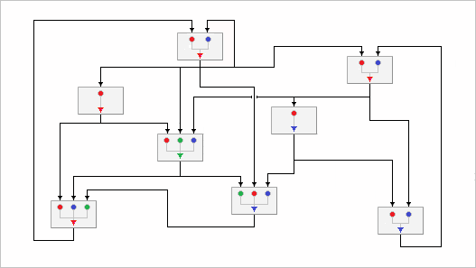

Behavior, and Mathematical Modeling
While studying or modeling behavior of systems of interacting components, we describe their state in terms of states of properties of components of a system, and the system as a whole. So, behavior of these systems is perceived as the sequence of changes of states of their properties over time, and is explained by the existence of dependence of each following state of the systems on their state preceding the change. Such systems are considered - dynamical systems.
Properties of some dynamical systems are measurable. Their states represent magnitude of properties and therefore can be denoted by numbers and deemed as quantitative. An obvious example of these systems is our solar system. State of this system is characterized by such properties of the sun and the planets as their mass, gravitational force and many more. Dynamical systems, all properties of which, chosen for studying or modeling their behavior, are quantitative, may be classified and referred to as the Quantitative Dynamical Systems.
Meanwhile, properties of many systems may be often perceived as qualitative. Considering systems we can attribute qualitative assessments to their properties, and describe the state of the systems in the form of affirmative propositions. So, for example, one may say: “My car is red” or “This window is only slightly open”. These descriptions, in general case, contain: name of the component, optionally name of the property, and mandatorily the predicate part which serves as the qualitative assessment of state of the property of the component.
Objectives of this page are: a) to describe dynamical systems all properties of which, chosen for studying or modeling their behavior, are qualitative, and which, thus, may be classified and referred to as the Qualitative Dynamical Systems, and b) to propose a way of specification of behavior of qualitative dynamical systems, that can be used when creating models of behavior of these systems.
Notion of the Qualitative Dynamical System and Feasibility of Their Mathematical Modeling
Although the expressive power and flexibility of natural languages make it possible to describe any system in terms of its qualitative characteristics, not each of the systems perceived in that way may become suitable for studying their behavior by developing their mathematical models just because states of their properties were given qualitative assessments.
In order for the idea to describe states and changes of the states of dynamical systems in the form of their qualitative assessments to be practically meaningful, that is, for they to be considered as qualitative dynamical systems which can be studied, or designed, by creating their dynamical models, these systems must not only be qualitative and dynamical. They also should be, in their essence, discrete, since the qualitative assessments attributed to them are discrete, and their behavior has to be reproducible in the dynamical models created for the systems. Or, in the other words, they just have to be discrete and modelable.
Accordingly, the study of feasibility of modeling behavior of the qualitative dynamical systems, conducted by the Kaleidoscope Project, has resulted in (1) defining the notion of the qualitative dynamical system, given in the form of the listing of all characteristics of nature and behavior, that should be inherent in all the discrete and modellable systems, that can be considered as the qualitative dynamical systems, and, thus, constitute the class of that systems, on the one hand, and (2) developing the qualitative dynamical systems behavior mathematical modeling technique that enables creation of mathematical models for any system of the defined class, on the other hand.
A note. Since, in practice, all systems, described on this and the other pages, are strictly discrete, dynamical and modellable, continuous repetition of classifiers “discrete”, “dynamical” and “modellable” may seem a bit redundant. Therefore, further on, they will be mentioned only in the titles of the sections and in cases when it is necessary to emphasize the fact that the qualitative system has one of these classifiers. Otherwise, they will be often omitted. Respectively, phrases like “qualitative dynamical system(s)” will also be often written merely as the "qualitative system(s)".
The rest of the sections describe: characteristics of the qualitative system, and content of specifications of behavior of qualitative systems that can be used at a time of developing their models, suggested by the Kaleidoscope Project.
Characteristics of the Nature and the Behavior of the Qualitative Dynamical Systems
Details of Characteristics of Qualitative Systems are described in two sections: “Characteristics of Nature of the Qualitative Dynamical Systems” and “Characteristics of Behavior of the Qualitative Dynamical Systems”.
Characteristics of Nature of Qualitative Dynamical
Systems
The nature of something is what it has become in the process of its creation, and what is practically impossible to change later. Therefore, different systems, regardless of what they are: living organisms or operating devices created by man, have and demonstrate different behavior. The character of this behavior is a manifestation of their nature, and thus, cannot be changed either. This section lists those characteristics of behavior, inherent in systems, that make it possible to classify them as qualitative systems and develop models of these systems utilizing the qualitative dynamical systems behavior mathematical modeling technique suggested by the Kaleidoscope project.
Qualitative Systems are Driven by Their Own Behavior. According to the notion of the qualitative dynamical system, defined by the Kaleidoscope Project, all systems considered as the qualitative have their purpose and the goals to achieve. Therefore:
All Qualitative Dynamical Systems, by their nature and definition, are the ones having their own behavior, which is organized based on the purpose of their existence, and the concrete goals of operation the systems are eager to attain due to, or despite, possible influences of external systems and/or the environment.
Qualitative Systems May Interact With the External World. The qualitative dynamical systems, just like many other systems may affect external systems or experience influence of everything that is going on around. But, unlike the systems driven exclusively by external input, they do not have a special “input channel” through which the influences could control their behavior directly. External influences on the qualitative systems (if they are a part of the organization of behavior of the systems) may only make modifications in the systems, perceived as the changes of their properties. For the observer "living in the world of that system", such influences are supposed to look like spontaneous changes of the state of the properties of the system, which are absolutely indistinguishable from the changes occurring in the result of the internal processes in the system. Accordingly:
The Qualitative Dynamical Systems are the self-driven systems, behavior of which may include interactions with other systems and/or their environment where they may produce changes in the state of other systems, on the one hand, and experience changes caused by the other systems observed as the spontaneous changes of the state of the properties, on the other hand.
Qualitative Systems are Discrete Systems. Studying processes of changes occurring in various systems, developing over a period of time comparable to the time of development of processes in all the systems around us, we perceive these processes as behavior of systems and always deal with two fundamentally different mechanisms causing changes in the systems and thus determining the character of their behavior. These are the processes developing as a result of continuous changes in systems caused by continuously acting forces of nature and processes formed of discrete changes produced by actions of limited duration. So.
The Qualitative Dynamical Systems are the discrete systems of interacting components whose behavior is considered as discrete processes of discrete changes caused by discrete actions.
Number of States of Properties of a qualitative system. Depending on the nature of a particular discrete system, the number of possible states which the properties of the system can take, may be in the range from: just a few, or several, to quite many different states. Meanwhile, as of the notion of the qualitative system, the number of states which the properties of these systems may take, is always reasonably limited.
The Qualitative Dynamical Systems are the ones which are characterized by permitting their properties to take a large number of states described by giving them as many qualitative assessments as it really makes sense; but the number of these states is always final.
Asynchronicity and Fragmentarity Changes of States of Properties. Being the systems of interacting components, whose behavior is naturally a consequence of activity of individual components, their interaction with each other, with external systems, and with the environment. Therefore:
The Qualitative Dynamical Systems are the ones which by their nature are classified as the systems with asynchronous interactions and hence fragmentary changes in the state of the system caused by changes in the state of properties of particular components of the system, and the system as a whole.
Characteristics of Behavior of Qualitative Dynamical
Systems
While reasoning about behavior at the everyday level, we primarily pay attention to the actions that someone or something performs in respect to surrounding systems or environment. And that is understandable. As the actions are a way of interaction between people, between machines and between people and machines, they are always important. However, when studying behavior of the natural systems or phenomena, and devices created by man, we, in order to gain an understanding of character of their behavior, tend to reveal mechanisms that drive the behavior of the systems. Therefore, in that study, we are primarily interested not so much in learning the character of the actions of the systems (after all, often the same result may be attained by using different actions), as in identifying the causes that directly or indirectly induce activation of actions, and in those changes in the systems which these actions produce.
Systems Behavior as Situations, Responses and Changes
Considering the causes of changes occurring in the discrete qualitative systems of interacting components from the point of view of describing character of their behavior, one may explain behavior of these systems as: 1) emergence in the systems internal situations, resulted from activity of components of the systems and actions of the environment, and 2) responses of the systems to the emergence of important for the systems situations. Accordingly, when describing behavior of the qualitative systemes, we pay special attention to the situations, responses of the systems to the situations and changes, produced as part of the responses. They are detailed as follows.
(o) Situation in a qualitative system (in contrast to the external situations that may arise around us) is simply a particular combination of states of a group of properties of the system characterizing important circumstances, present in the world of the system. Such combinations are formed as a consequence of changes in the state of the properties of the system caused by the earlier activity of the system itself, and/or the influence (or direct actions) on the states of the properties of the system by other systems, Emergence of situation in a system generally means accumulation of important changes in the state of the system that require it to respond to the formed situation by producing certain modifications either in the system itself, or in its environment, or in both.
(o) Response is a certain way with which a certain system reacts to the situation arised, by activating certain action performed with the aim of producing required modifications corresponding to the situation, in the system itself and/or in its environment, and.
(o) Change is the result of performing the action, activated as a part of the response of the system; where the change is observed as the appearance of a new state of property of the system, proposed by the system during its response to the situation.
In a formal way, the abstract perception of change of a single state of a single property of a system carried out as the response to a single situation can be considered as the Property State Dependence Relation (PSDR) and be schematically written as a chain of the constituents of the response. It can be viewed as the abstract piece of the process of behavior of a system:
“Change <= Response <= Situation”
or shorter as /C-R-S/. This expression states that the occurrence of a particular situation S, in a system, is the cause of its response R to the situation S, which, in turn, is the cause of a change C in the state of a particular property of the system corresponding to the occurrence of the situation S. This chain of the relations is intentionally written as directed from right to left in order to evoke association of the scheme of dependence relations with the process of computation of state of a property, that might be presumably implemented in the form of mathematical expression of a model of a system. (For the details of modeling of behavior of qualitative systems, see next page: “Qualitative Systems Behavior Mathematical Modeling Technique”).
Behavior as Correspondences of States of Properties to Situations
Described Property State Dependence Relation schema is a convenient abstract way of representation of the idea of existing dependence relation of an abstract state of a property on the emergence of an abstract situation. But it may have limited application when it could be necessary to consider how the particular responses of a system to the occurrence of particular situations could be used to construct a schema larger than /C-R-S/, describing behavior of a system as a composition of few or several particular responses to particular situations. In order to describe the connections of these particular responses in a description of the organization of the system's behavior, the elements of the description should be not just abstract ideas of dependency. They should have all the concrete elements participating in the response, allowing the description to explicitly identify each property by its name and each state as a certain constant used to represent a particular state of the property.
The practically useful way of describing the concrete dependence relations of the state of properties on the situation, enhancing the abstract idea of that relation described as the Property State Dependence Relation schema, is the method suggested by the Kaleidoscope project that is developed for creating a specifications of the behavior of qualitative systems. This method consists in representing the dependence relations of the state of a property on a situation in the form of a Correspondence. The Correspondences serve as the real constructive elements describing the behavior of concrete qualitative systems. When used for describing behavior of a system, they are supposed to be created for every concrete dependence relation of the state of property of a system on each concrete situation causing change in the state of the property. And each concrete Correspondence is defined to hold the content of the concrete dependence relation describing a concrete state of a concrete property on a concrete situation and hence is defined as a pair of the dependent and independent elements of the relation. The first, dependent element of the relation in this pair is the property and the constant representing the concrete state, called "proposed state of the property", which the property takes as corresponding to the situation, called "expected situation of the relation", described in the second, independent element of the pair. Whereas, the independent element of the relation is a list whose elements are the property included in the description of the group of properties, characterizing the expected situation and the constant representing the expected state of the property in the expected situation.
After all the explanations of the meaning of Correspondence, its concise definition may be given as:
The Correspondence is the description of a concrete dependence relation of state of property given as a pair where, first element of the pair is the dependent element of the dependence relation, which is a pair holding the name, or identifier, of the property and the proposed state of the property, corresponding to the situation, while the second element is the situation, which is the independent element of the dependence relation, which is described as a list of pairs where each pair holds the name of the property, or its identifier, and the expected state of the property.
This definition assumes that all states of the properties are denoted in the way chosen for representation of states of the properties of the system.
Example of implementation of a single Correspondence in a model of a qualitative system is presented in Figure 1 (for details on the presentation read section: Explanation of Modeling Formalism Used).
Figure 1. The Correspondence of state of Property P1 (depicted as color Magenta) to the situation characterized by states of Properties P2, P3, and P4 (depicted as colors Red, Green and Blue, respectively).
The Correspondence, in Figure 1, describes the only correspondence of dependence relation of state of Property P1 on states of Properties P2, P3, and P4, characterizing the only situation. Since the states of the properties characterizing the situation can be in different states, and the proposed state of the property P1, specified in the Correspondence as the color Magenta depends only on one specific combination of properties described in the Correspondence as the colors Red, Green and Blue, in order to represent the Correspondence, in the model, an additional element is used. This element represents the fact of the presence of the situation in the system and helps to present the Correspondence as a connections of Properties P2, P3, and P4 characterizing the situation with the fact of the existence of the situation, and the fact with the Property P1 state of which depends on the fact of the presence of the expected situation in the system. In the figure, the fact is shown as a small circle and the Correspondence is depicted a) as lines, marked with the colors of the expected states of the Properties, directed from the situation Properties, P2, P3, and P4, to the fact, and b) as a line, directed from the fact to the Property P1, that is marked with the color of the proposed state which the property is to take in the event of emergence of the situation.
Everything complex is always a combination of something simpler
Proceeding with the idea expressed in the title of this section, one may say that when dealing with qualitative systems, the "complex" part of description of their behavior is the Correspondences. Correspondences describe dependent property, property's proposed state and the situation, which is also a list of properties. Emergence of situations makes dependent property to take the proposed state. However, as it was just discussed, Correspondence, in turn, serve as the simple building blocks of the larger structure - scheme of behavior of entire systems. Dependent properties described in Correspondences are listed as constituents of situations in other Correspondences and, thus, form a more complex structure. This structure can be called a composition, or the net, of Correspondences. It describes all the properties, all groups of properties characterizing situations, the structure of their connections in the system. And so, in other words, it is a description of the changes of the states of the properties of the system, which we perceive as the step-by-step process of behavior of the system. Illustration of the principle of connection of individual Correspondences in the scheme of process of behavior of a system is presented in Figure 2.
Figure 2. The Correspondences connecting principle. It is an Inverted graph where unlike the graph in which properties would be represented as nodes and relations among them as arcs, the nodes represent the property dependence relations (i.e., the Correspondences) and the arcs stand for the properties. The structure of the links of Correspondence provides control over the process of behavior of systems and therefore can be called a Scheme of Development of the Process of Behavior of the System, or just a Net of Correspondences.
The outcome of representation of the system in the form of the graph in which the Correspondence of the relations are represented as the nodes, whereby the connections of the output of the Correspondences to the input of other Correspondences, unlike the representations where the nodes of the graph represent properties, is in that Correspondence connection graph explicitly shows all the possible ways of flow of “signals” from one Correspondence to the others and thus explicitly shows different trajectories of development of asynchronous subprocesses in the main process of behavior of a system. That may be useful for analysis of behavior of a studied system.
Another outcome of the representation of the system in the form of the graph, whose nodes are the Correspondence, is that it illustrates two base ways of connections possible between the Correspondences and between the properties of the system.
Two Basic Ways of Combining Single Correspondences
Even without analyzing characteristics of behavior of qualitative systems, but merely turning to our own experience and recalling everything we know about situations and reactions to them, it is possible to say that when thinking of the organization of behavior of the qualitative systems as of consisting of standard elements, first thing that springs in the maid is the two natural way of connecting the Correspondences making them work together. And for that, it is necessary to realize just two things:
(1) that each situation may produce changes of the state of not only a single property; it may also act simultaneously upon several properties by causing them all to take either the same or different states, depending on the purpose and needs of a particular modeled system; and,
(2) that state of each property of the system may depend not only on a single, but on several different situations; in case of the occurrence of such situations, the dependent property may take either the same or different states proposed by different correspondences of states of properties to different situations, which are explicitly specified in the Correspondences.
Example of a fragment of a model of a qualitative system, illustrating both ways of composition of Correspondences, is presented in Figure 3 (for details on the presentation read section: Explanation of Modeling Formalism Used).
Figure 3. Composition of six Correspondences.
Figure 3 presents a fragment of a model of а qualitative system created based on the same modeling framework as Figure 1. Therefore, just like Figure 1, Figure 3 depicts Properties as large circles, which are in the initial states in the figure. Small circles depict facts of presence of situations in the system. And the lines connecting the situation Properties with the facts are marked with the small dots, colors of which determine the expected combinations of states of groups of situation properties, whereas, the lines directed from the facts to the Properties are marked with the small arrowheads having colors of the proposed states of the dependent Properties. The content of this figure presents composition of six Correspondences where Property P1, state of which, on the one hand, depends on the occurrence of three different situations (P2, P3), (P4) and (P5, P6, P7) that may set the state of the P1 as Red, Blue or Green, and which, on the other hand, itself is a one property situation that can cause properties P8, P9 and P10 to take states denoted by color Red, Blue and Green when P1 is in state Blue, Green or Red respectively.
Thus, based on the behavior described so far and in accordance to its vision developed in the Kaleidoscope Project, the mechanism of behavior of qualitative systems is determined: a) by the Correspondences that explicitly describe dependence relations of states of properties on the emergence or disappearance of situations, and, b) by, not explicitly described, but implicitly present, in the state of the systems, dependence of formation of situations represented by combinations of the state of properties, change of which occurs as a result of changes in the state of properties, included in the description of these situations, when the changes of the properties characterizing situations were produced earlier as the result of response of the systems to the situations that has been formed earlier.
Behavior as Step-by-Step Process of Transitions of State of System
Taking into account all that has been described above, behavior of qualitative systems can be viewed as a process consisting of a sequence of steps, the content of which is always the same. Each step responds to the situations formed at the previous step, by performing modifications in the system corresponding to the situations being processed, results of which are observed as the fragmentary changes of the state of the properties of the system. And since the states of some properties can be included in the descriptions of the expected situations, the consequence of the changes in the state of such properties can cause changes of the situations presented in the state of the system.
Depending on the current state of the system at each step, changes in the groups of properties characterizing situations subjected to modifications can cause:
(a) emergence of situations, completion of formation of which was expected as a change of the state of one, more, or of all states of the groups of properties characterizing situations; and these changes happened during the execution of the current step;
(b) update of states of groups of properties characterizing situations which are not yet entirely formed with one or more, but not the last, replacements of state of properties characterizing situations, that make the groups to proceed formation of the situations;
(c) destruction of existing situations represented by combinations of state of groups of properties, that were formed in the past, but the result of changes of the state of properties of the groups, produced by the system during the step, caused the destruction of the combination of the state of groups of properties, since the properties, states of which have been changed, are included in the descriptions of the situation, so that new combinations of the state of properties no longer represent existing situations.
Possible cases when the execution of the current step of the process has ended, but none of the combinations of the state of the groups of properties characterizing expected situation has been formed and therefore the next step of the process cannot begin is an entirely anticipated form of termination of the process. Such a stop of the process is simply an indicator that everything that should be done by the system as its response to the occurrence of a single or chain of situations has been done, and that thus the period of active behavior of the system has been completed. But such completion does not mean that the system has stopped acting at all. The activity of its components and other systems with which the system under consideration can interact continues. So sooner or later a moment should come when either in the result of the ongoing processes in the components of the system, or under the influence of the surrounding systems or phenomena, someone or several properties will spontaneously change their state and these changes will create one or several new situations that will revive the active behavior of the system.
As it follows the description of the behavior of the qualitative system as the sequence of steps, two described factors determine the organization of behavior of the qualitative systems. They are: the way of connection of the Correspondences and the step-by-step mechanism of application of Correspondence forming the process of behavior of the systems as the dynamically organized behavior of systems of varying complexity.
The description of various forms of organizing the processes of behavior of the systems is described on the pages presenting approaches to different representations of models of the system, studied and proposed by the Kaleidoscope project.
So, What the Qualitative Dynamical System Is,
After All
Summarizing, all what has been described and discussed so far about perception of systems as qualitative and about the characteristics which the qualitative systems should have, one would specify the qualitative systems as:
The Qualitative Dynamical System is a discrete system of interacting components all properties of which selected for studying or modeling the system are perceived as qualitative, i.e., are described by assigning to them qualitative assessments expressed in the form of affirmative propositions; whereas characteristics of the nature and behavior, inherent in the system, make it possible to develop for it mathematical dynamical models by utilizing modeling solutions proposed by the mathematical modeling technique created for modeling these kinds of systems.
Example presented in Figure 4 illustrates a complete model of a qualitative dynamical system named “Dining Philosophers”. Similar to fragments presented in Figure 1 and Figure 3, this model was developed based on the qualitative systems behavior modeling technique and utilizing the development tool called “Qualitative Dynamical Systems Modeling & Simulation Environment” both provided by the Kaleidoscope Project.

Figure 4. Model of qualitative dynamical system: “Dining Philosophers”. For details on the presentation read section: Explanation of Modeling Formalism Used, right below.
Explanation of Modeling Formalism Used in Figures
All images, used in the Figures presented in the sections for illustrating their context of this page, are the snapshots made from the screens of the software application, named "Qualitative Dynamical Systems Modeling & Simulation Environment" QDS MSE, developed in the Kaleidoscope Project. Access to the complete description and downloading of this application is provided from the main page of the documentation. Content of this section describes only the way of representation of elements of models of the qualitative system used by the modeling formalism utilized in the QDS MSE.
Illustrations presented in Figure 1 and Figure 2 on this page are the fragments of models of unnamed example systems; whereas the figure 4 is the complete model of the qualitative system, called “Dining Philosophers”. These models are abstract views of qualitative systems created with the help of the development environment, called “Qualitative Dynamical Systems Modeling & Simulation Environment”. The graphical views of models of the qualitative system in this development environment are created utilizing the Multicolored Logical Net (McLN) modeling formalism (MF).
So, according to the requirements of the McLN MF the Properties of a modeled system are depicted as large circles, the facts of the presence in the state of the system of expected situations are depicted as small circles, while the dependences of the state of facts on the existence of situations in the system and the dependences of the state of properties on the state of the facts are depicted as lines connecting the properties that are elements of the situation with the facts and the facts with the properties that must change their state due to the occurrence of a situation.
Qualitative states of the Properties of models are presented by the color of the circles. Therefore, the connections of the properties that are elements of the situation with the facts of the presence of expected situations are marked with the small colored dots having the colors of the expected states of the input Properties of the connections, described as the expected states of the Properties of situations specified in the Correspondences. The role of these connections is to be the “Recognizers of the Situations”. Whereas the connections of the facts to the dependent Properties are marked with the small colored arrowheads directed from facts to the Properties. The role of these connections is to be the “Proposed State Generators”. Colors of the arrowheads of these connections are those proposed states, specified in the Correspondences, that states of dependent Properties should take in the event when all input Properties of the connections of the Properties with facts appeared to have the same color as the expected colors of dots marking the recognizing connections.
Explanation of Modeling Formalism Used in Figures
Necessity to create specification of behavior of a qualitative system may arise in many cases, but the mains are 1) creation of document describing our knowledge on behavior of system gained in the process of its study, that is, as they now say, to create a hard copy of what has accumulated in our maid, and 2) development of models of behavior of qualitative systems created as description of knowledge on reasons of changes of states of properties depending on the occurrence of situations in systems. This knowledge is contained in the Correspondences of the dependence of the state of properties on the facts of the occurrence of certain combinations of states of groups of properties characterizing expected situations. Therefore, the content of a Qualitative System Behavior Specification, or shorter QSBSpec, should, in essence, be simply a listing of the Qualitative Property Dependence Specifications, or shorter QPDSpecs, content of which should describe dependence relation of state of particular property of the system on all situations occurrence of which causes change of the state of the property. And accordingly, as each dependence relation is merely a set of Correspondences describing dependence of particular state of particular property on a particular situation, the content of the QPDSpec should be described as the listing of those Correspondences, where each Correspondence holds description of all expected situations occurrence of which causes change of the state of dependent property of the relation to the proposed state described in the Correspondences.
Preferred way of description of Specification
Being a process of "materialization" of ideas of the studied qualitative system, in which abstract elements of the system and characteristics of its behavior, that have formed in our minds, turn into Qualitative System Behavior Specification, creation of this specification presupposes usage, in it, designations of components of the system, properties of the components, and states of the properties.
But, despite the fact that such specification is created as a text document, application in the description of the specification of designations of these elements of names of components, properties and property states taken from statements about state of the system, written in natural language, may be too cumbersome and therefore difficult for editing and utilization of the specification. Contents of specification, in general, should include descriptions of dependence of the state of properties on the occurrence of situations and situations as the listing of pairs: property/state of the property. And since properties (and their states) described in some QPDSpecs as dependent should be described in other QPDSpecs as independent, and independent ones, on the contrary, should be described as dependent, identifiers of the properties and their states should be included in descriptions of different specifications repeatedly.
Therefore, in order to avoid repetition of long text identifiers of the properties and their states, in the QSBSpec, the idea of method of denotation of identifiers, suggested by the Kaleidoscope project, is based on replacing the names of components of the systems, properties of the components, and long descriptions of states of properties, made in a natural language, with their short unique identifiers.
So, the way of creation of the QSBSpec, described in this section and used in others, suggests defying the Specifications as consisting of two parts: auxiliary and main. Auxiliary part of the specification is created as two lists of pairs of the unique identifiers UIDs and their text equivalents. The first of these lists is a pair: (a property UID and a text description of the property name), which is created as a concatenation of the description of the component of the property and the property name. Whereas, the second list is also a pair. But, its pairs are a state of a property UID and a predicate part of the statement of the state of the property, which is the text describing the meaning of the identifier of the state of the property. Both of these lists are created in the process of studying the behavior of the system, as new properties, their states, and unique identifiers are added to its description. The lists are therefore the enumerations of all the properties of the system and all states of all properties that can be used when working with the system, on the one hand, and the means of interpretation of unique identifiers of properties and states of properties, when it is necessary, to replace them with texts in natural language, on the other hand. Content of the main part is the Specification itself. It is a list of QPDSpecs which describe the content of the correspondences of states of properties to the situations in which the names of the properties and their states, given initially in natural language, then have replaced by their unique identifiers, introduced and added to the lists of auxiliary part of the specification at a time of creating these lists.
QSBSpec Structure
Based on the proposed by the Kaleidoscope Project specification format, all unique identifiers of properties begin with the lowercase letter "p", followed by the index of a particular property in the list of UIDs of properties; whereas all identifiers of states of properties begin with the two lowercase letter, either "ps", that stand for “proposed state” or “es”, that is short of “expected state”. Both these abbreviations are followed by the index of a particular text describing the meaning of the state of a property, in the lists of UIDs of states of the properties.
General structure of the specification of behavior of a qualitative system may be written as:
Figure 5. Structure of Qualitative System Behavior Specification.
As the presented QSBSpec is defined as a list of QPDSpecs, where each QPDSpec is a pair, second element of which is a list of Correspondences, and content of each Correspondence, in tern, is again a pair, second element of each is a list of pairs describing expected situation, description of such construction in the form of an expression would be rather cumbersome. Therefore, in order to make the form compact, this description utilizes notation, used in the Kaleidoscope project. In the accordance with this notation, presentation of the lists in the form is given with the help of constructs: L ni=0, C cn(i)j=0, and S sn(i,j)k=0 that are the project’s proprietary way to denote list iterators of elements of the specification as bold uppercase characters L, C, and S, whose indices i, j and k, change from 0 to n, 0 to cn(i) and 0 to sn(i,j), respectively. Thus.
Construct Lni=0 represents a list iterator through all QPDSpecs, index i of which change from 0 to n, where n is the total number of QPDSpec in the QSBSpec.
Construct Ccn(i)j=0, is a list iterator through all Correspondences, index j of which change from 0 to cn(i), where cn(i) is the number of Correspondences in i-th QPDSpec. And finally.
Construct Ssn(i,j)k=0 stands for the list iterator through all the pairs: [variable/value] describing expected situation, index k of which changes from 0 to sn(i,j), where sn(i,j) is the number of pairs characterizing situation defined in j-th Correspondence of i-th PSDSpec.
Elements pi and pi,j,k, in the presented QSBSpec are the unique identifiers of the properties of the system, and elements esti,j,k and pst+1i,j, are the unique identifiers of the states of the properties, where the esti,j,k stands for expected state of the property pi,j,k at discrete time t, while the pst+1i,j stands for proposed state that the property pi should take at discrete time t+1.
Adaptation of the QSBSpec to its application for creating models of qualitative systems is described on the next page: “Qualitative Dynamical Systems Mathematical Modeling Technique”.